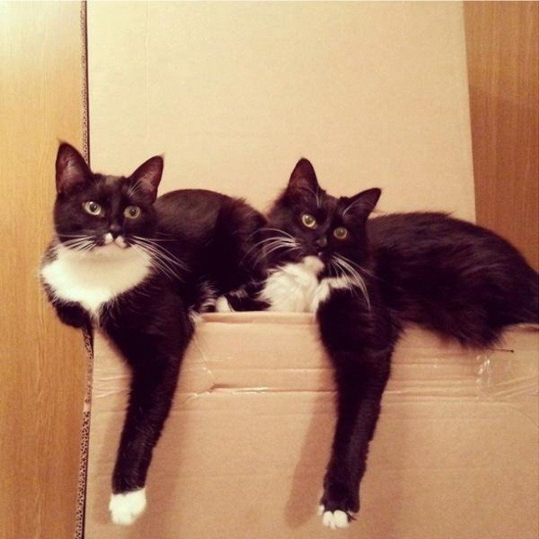
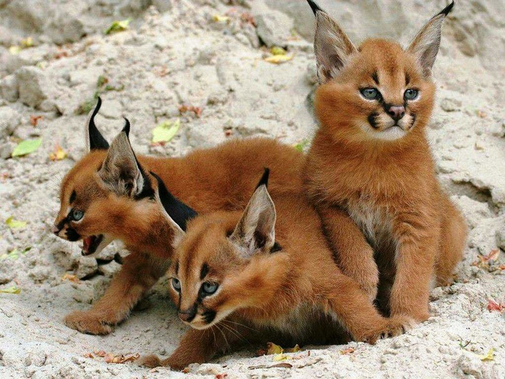

Вступ
Щорічно, 8 серпня, за ініціативою Міжнародного фонду захисту тварин відзначається Всесвітній день кішок.
За статистикою, 80% людей мають домашніх улюбленців.
При цьому, коти займають перше місце від загальної кількості вихованців. Але котики завоювали не тільки реальний світ, вони стали супер героями всіх соцмереж.
Затишне муркотіння, м’які лапки.
Хто хоч раз не приносив додому милий, пухнастий, беззахисний клубочок?! Мало хто, байдужий до цих грайливих, ласкавих і дуже розумних тварин. Кішки є справжнім домашнім хижаком. Вони не лише оберігають домівку від гризунів, але і як багато хто стверджує, лікують та продовжують життя господарю. Кожен кіт має свій особливий характер.
У багатьох країнах існують спеціальні парки для вигулювання котів, а також різні котячі магазини, кафе та готелі, де улюбленця можна поселити на деякий час.

Дім
Де в будинку саме тепленьке, затишне і м’яке місце?
Правильно! Там, де лежить ваш кіт або влаштувалася ваша кішечка.
Тому в цей день постарайтеся не тільки потішити своїх вусатих-хвостатих улюбленців, а й зробити добру справу на користь бездомних тварин: відвідати притулок, погодувати «нічию» кішку біля під’їзду або перерахувати кошти в притулок. Саме для цього і встановлено це свято.
Всі ми обожнюємо котів, і це не просто так: це дивовижні тварини. Ми думаємо, що знаємо про них вже все, однак ці пухнасті все ще можуть здивувати. Наприклад, чутки про те, що коли кіт лягає вам на хворе місце, то таким чином лікує вас, – правда. Як показали медичні наукові дослідження, коти можуть лікувати різними способами…
Цікаві факти про котів.
-
У середньому коти витрачають дві третини свого життя на сон.
Виходить, що, наприклад, дев’ятирічний кіт не спав лише три роки свого життя.
Виявляється, до нашого мозку біологічно ближчий мозок кота, ніж собаки.
У нас з котами за емоції відповідають ті ж самі ділянки мозку. -
Найбільший у наші дні кіт – це лігр.Він може вирости до 4 м, а вага може перевищувати 300 кг.
Найбільший представник цього виду, що зараз живе на планеті – лігр Геркулес. Його вага 450 кг. -
Найменший сучасний дикий кіт – це чорноногий кіт.
Самиці досягають менше 50 см у довжину і можуть важити всього 1,2 кг.
Британці і австралійці вважають зустріч з чорним котом великою вдачею,
тоді як в Європі і Північній Америці це, навпаки, вважається поганим знаком. -
Найбільш популярна у світі порода– персидський кіт,
потім йдуть мейн-куни і сіамці. Є порода котів, яка обожнює воду.
Це турецький ван. Її представники люблять купатися
завдяки своєму водонепроникному хутру. -
-
Багато котів здатні знайти шлях додому,незважаючи на відстані.
На думку експертів, або кішки визначають своє місцезнаходження по куту сонячного світла,
або у них є намагнічені клітини у мозку, які діють як компас. -
Котів можна розрізнити, як людей за відбитками пальців,
тільки у котячих це відбиток носа. У котів немає потових залоз по всьому тілу,
як у людей. Вони пітніють тільки через лапи. -
Коти дуже чутливі до вібрацій.
Вони можуть відчути поштовхи землетрусу на 10-15 хвилин раніше людей. -
Кішки зазвичай правші,а ось коти – шульги.
-
У власників котів на 30% знижується ймовірність інфаркту або інсульту.
-
Цікаво? Тож пропонуємо вам познайомитися з життям кішок детальніше за допомогою енциклопедії.